Sanitarios.
Te ofrecemos una amplia selección de sanitarios de principales marcas. Para todos los gustos estéticos y presupuestos, pero ante todo apostamos por la calidad.
El mundo del wc, sobre todo el suspendido, está en constante evolución, como lo están el resto de componentes del baño moderno.
En Bagno dispones de las últimas tendencias, tanto en cuanto a colores que te faciliten homogeneizar la estética en todo el cuarto de baño (el mate está muy de moda para los exteriores en los inodoros), como en cuanto a características y avances técnicos que potencian y mejoran la higiene (el efecto rimless es un buen ejemplo).
Así mismo te ofrecemos un amplio abanico de opciones en pulsadores, con formas y colores (negros, grises, dorados) de lo más variado.
Marcas en el showroom
- Alape
- Catalano
- Duravit
- Glass Design
- Pozzi Ginori
- Villeroy & Boch
Y si lo que buscas no está en exposición, lo buscamos en la Bagnoteca.
Novedades 202635

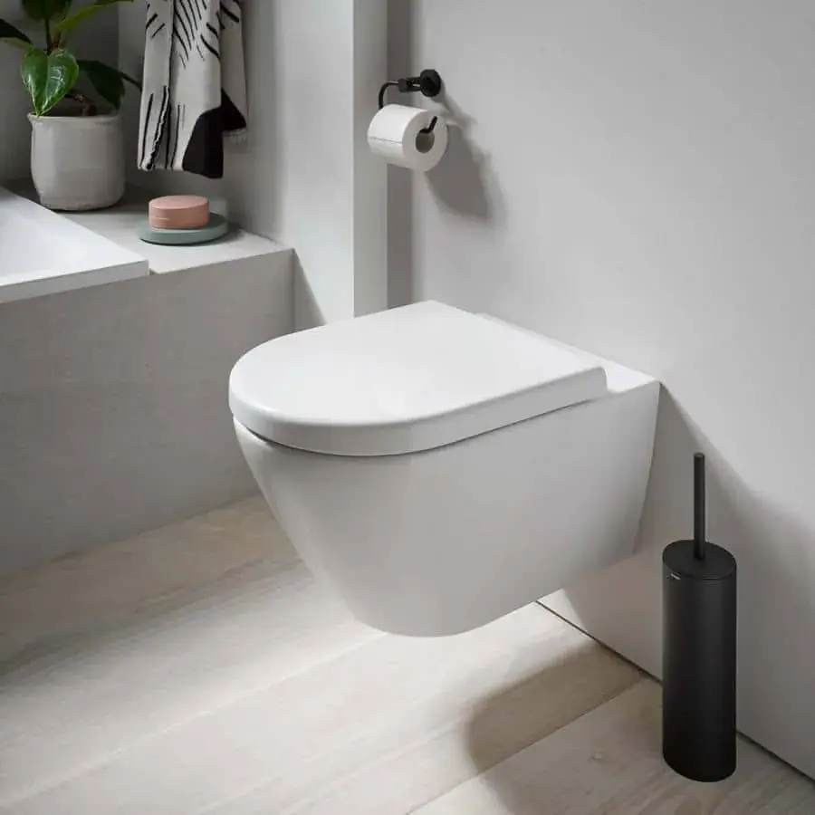
SanitariosSanitario, grifería, mueble y accesorios rara vez comparten un mismo criterio
Y cuando el presupuesto es ajustado, la coherencia suele ser lo primero que se sacrifica.
Sieger design lo ha planteado distinto en D-Code, el nuevo catálogo de Duravit: grifería y accesorios a juego, acabados en cromo o negro mate, muebles en verde, taupe, roble y antracita. Garantía de por vida en cerámica.
- Sanitarios
Inodoros y bides Balcoon – Duravit
Nuevas formas y una paleta de colores que incluye el tono Arcilla Terra Mate, especialmente interesante para proyectos que buscan una estética más artesanal.
Incorpora el vitrificado DuraShield®, que mejora la resistencia y facilita la limpieza, algo clave en baños de uso intensivo.
Los inodoros en particular integran además la tecnología Rimless®, que optimiza la higiene y aporta una geometría interior más depurada.
 Sanitarios
SanitariosUn inodoro inteligente no es solo tecnología, también es instalación bien resuelta.
Cuanto más discreta parece una pieza suspendida, más exige coordinar detrás: la toma eléctrica oculta, el bastidor, la cisterna empotrada.
Ese equilibrio entre diseño mínimo y complejidad técnica es justo lo que resuelve Rada, de Mizubath: libera el suelo, facilita la limpieza y deja una pantalla negra como único acento visual.
Si estás en fase de instalación, coordinamos contigo cada detalle técnico.
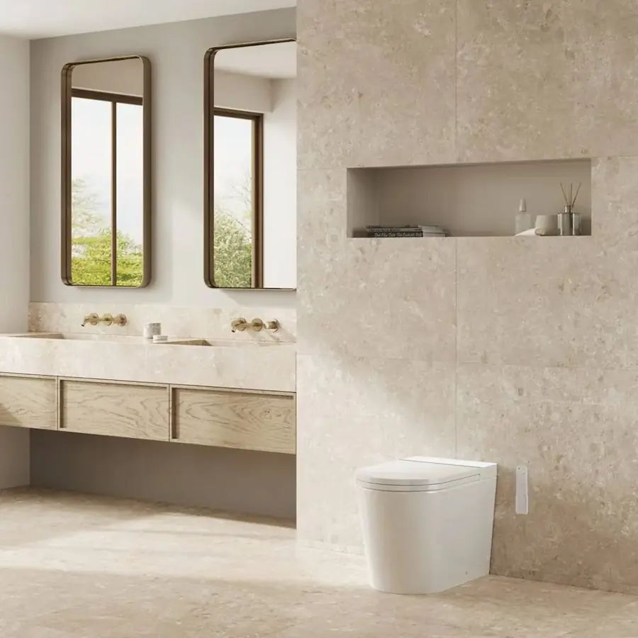
SanitariosInodoro inteligente de suelo Rada - Mizubath
Este inodoro de apoyo con cisterna integrada elimina la necesidad de trasdosados técnicos, siendo la mejor solución para reformas donde la tabiquería no permite empotramientos.
Su fondo reducido optimiza la circulación en baños de cortesía sin renunciar a la tecnología inteligente. La integración de funciones en una interfaz discreta refuerza el minimalismo en el baño.
Es una alternativa técnica eficiente para proyectos que exigen alta higiene en perímetros limitados, simplificando significativamente la instalación.
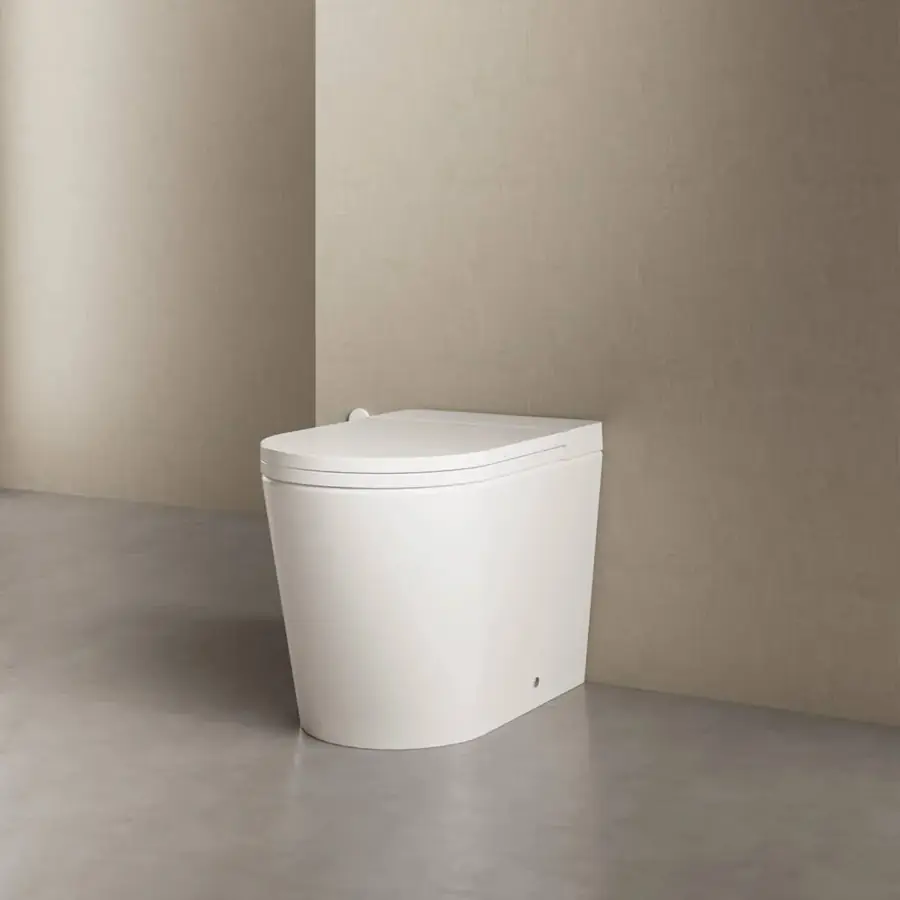
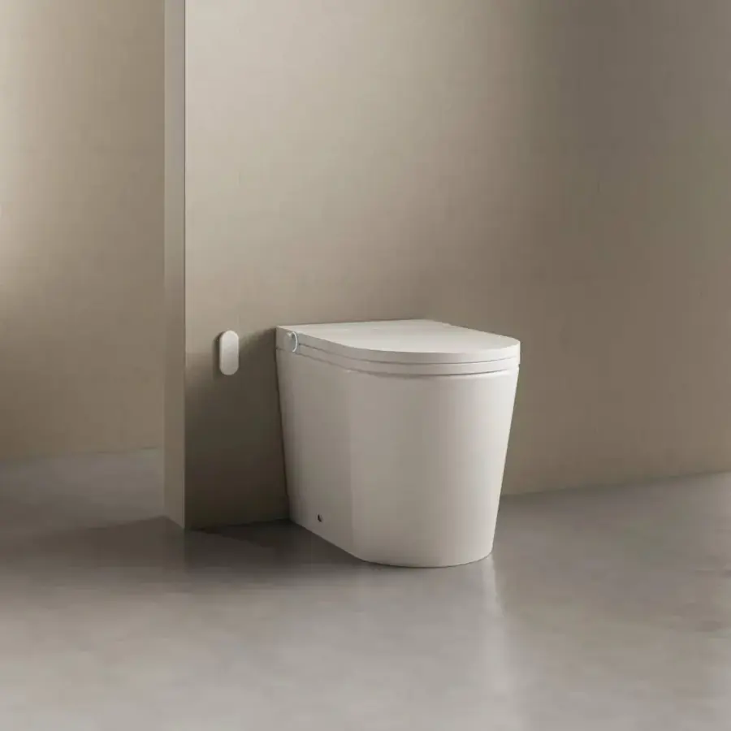
SanitariosInodoro inteligente de suelo Rada Basic - Mizubath
El inodoro inteligente Rada Basic garantiza higiene avanzada en baños donde se busca tecnología fiable sin modificar la instalación a suelo.
Sus programas de lavado —posterior, femenino y masaje— son ajustables en temperatura, intensidad y posición, lo que facilita adaptarlo a cada tipo de usuario, incluidos niños o personas con movilidad reducida.
La cánula autolimpiable reduce el mantenimiento y asegura continuidad de uso. Todo controlado a partir de un mando remoto centraliza todos los ajustes y permite liberar la descarga.
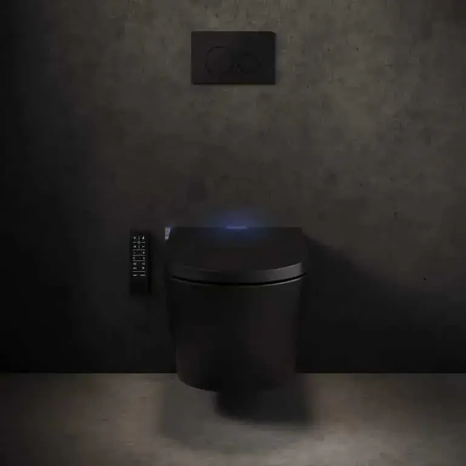
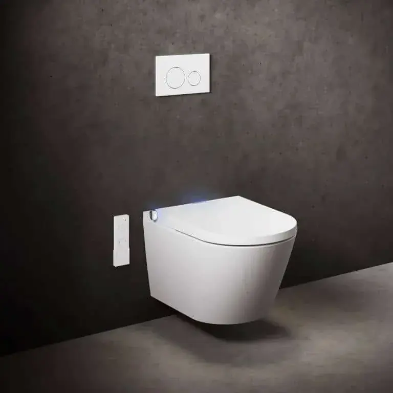
SanitariosInodoro suspendido Smart Toilet ELUM - Mizubath
Este inodoro suspendido de líneas ortogonales es una solución técnica avanzada para optimizar el espacio en baños de dimensiones reducidas sin renunciar a las prestaciones de un smart toilet.
Su diseño compacto facilita la limpieza del pavimento y aporta ligereza visual al conjunto. Esta peculiaridad no impide sus grandes prestaciones.
La interfaz digital discreta, su avanzado sistema de limpieza y el control térmico elevan el estándar de confort en proyectos residenciales premium.
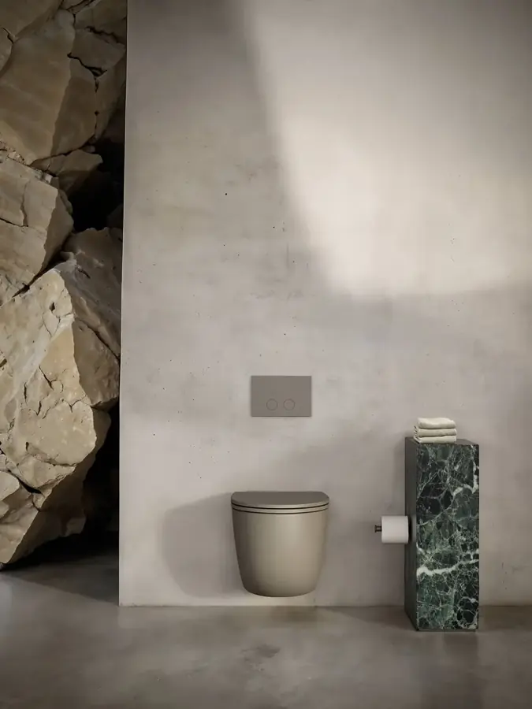
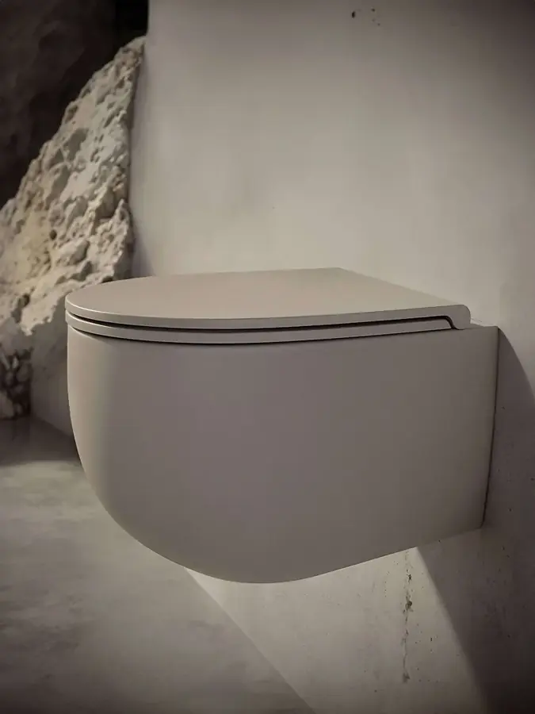
SanitariosSanitario en acabado blanco mate Rondo - Inbani
Rondo nace como solución compacta para proyectos que requieren un inodoro suspendido. Su fijación oculta refuerza el concepto de estética sin cortes.
Su acabado mate facilita la integración en baños contemporáneos donde la limpieza visual y la eficiencia técnica son prioritarias.
Incorpora el sistema Vortex Silent Rimless, que optimiza la descarga sin salpicaduras y reduce el ruido, con fácil acceso para mantenimiento.
Disponible en Blanco, Dune, Forest y Negro, aporta continuidad cromática y libera superficie para una mayor amplitud percibida.
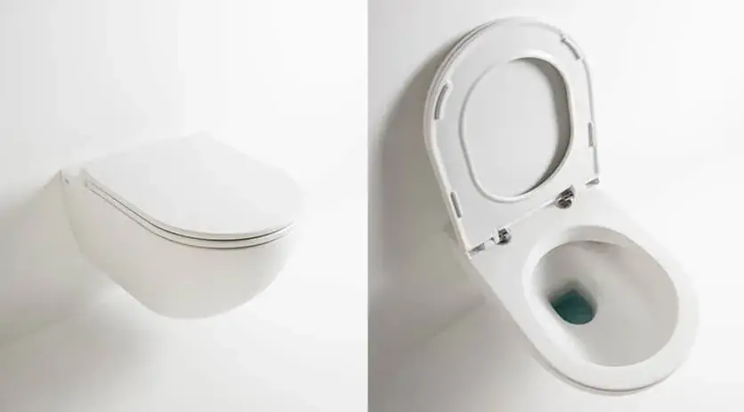
 Sanitarios
SanitariosSanitarios suspendidos, a suelo y Mini, Enjoy PRO – Ceramica Cielo
Colección de sanitarios diseñada para optimizar la higiene, la eficiencia y la instalación en proyectos de baño que buscan tecnología y diseño a partes iguales.
Destaca por su sistema de descarga Rimless 2.0.1, garantizando una limpieza completa con menor consumo de agua; sistema de conexión Adapto, que facilita el montaje y mantenimiento; y la tapa modelo ReSeat, de cierre silencioso.
Disponible en versiones suspendidas, a suelo y MINI, ofrece un alto rendimiento técnico, a partir de materiales sostenibles fáciles de mantener.
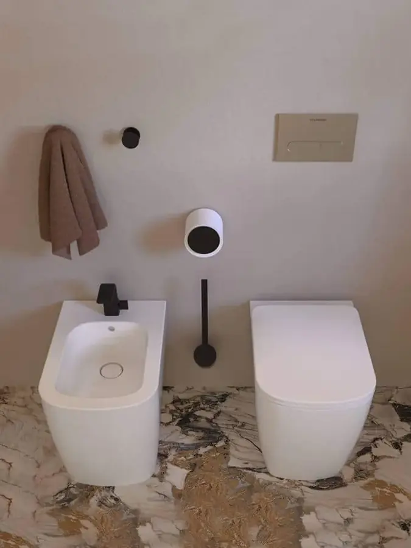
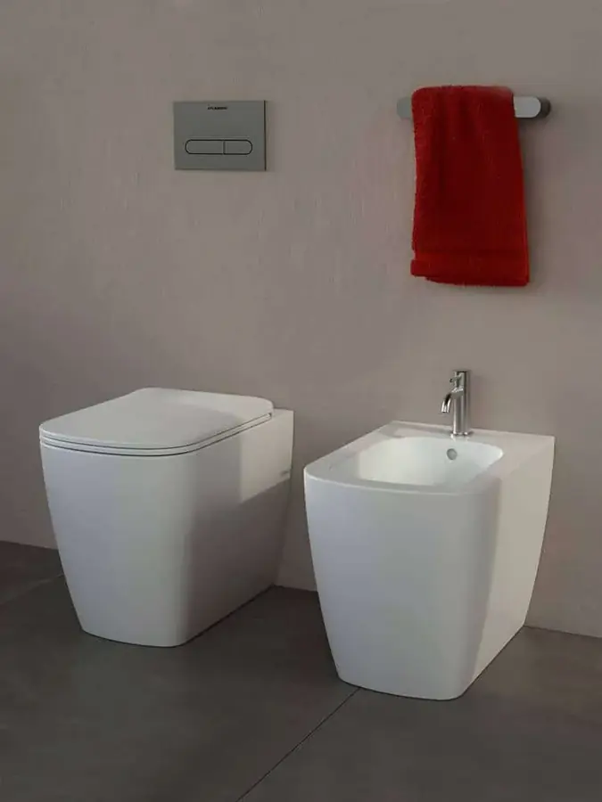
SanitariosInodoro y bidé para baño Play - Flaminia
La colección Play de Flaminia incorpora un nuevo inodoro monobloque que optimiza espacio sin comprometer el rendimiento técnico ni renunciar a la calidad cerámica de la firma.
Equipado con tecnología GoSilent para una descarga silenciosa y eficiente, junto a un sistema de doble flujo que reduce el consumo de agua.
Con solo 58 cm de profundidad, su diseño ultracompacto lo hace ideal para proyectos residenciales, hospitality o contract donde la eficiencia espacial y la funcionalidad hidráulica son prioritarias.
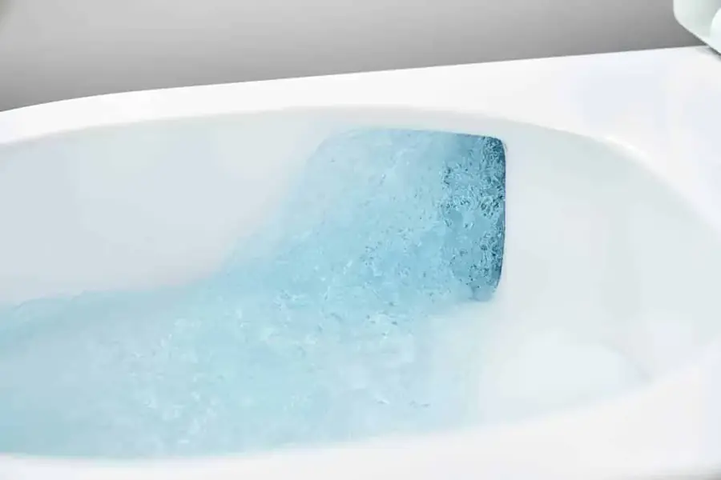
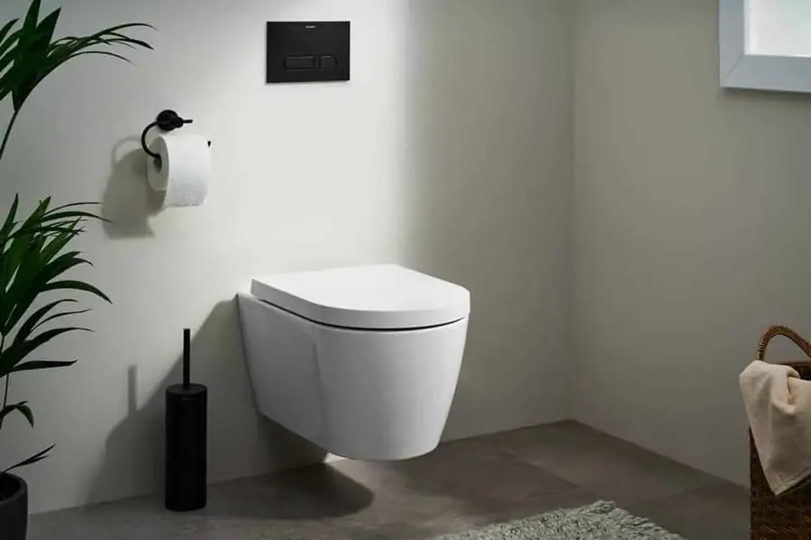
SanitariosInodoro ME by Starck Edición Hero – Duravit
Inspirado en el diseño original de Philippe Starck con tecnologías que garantizan el máximo confort y una higiene avanzada para cumplir con los estándares más exigentes.
Equipado con cisterna rotativa DuraFlush, asegura una descarga silenciosa y eficaz con bajo consumo de agua y una limpieza eficiente.
Su diseño sin reborde ni escalón interior, junto al vitrificado cerámico DuraShield®, reduce el esfuerzo de limpieza y mejora el mantenimiento diario.
Con asiento ergonómico y sistema de fijación superior DuraFix® Pro la instalación es rápida y precisa.
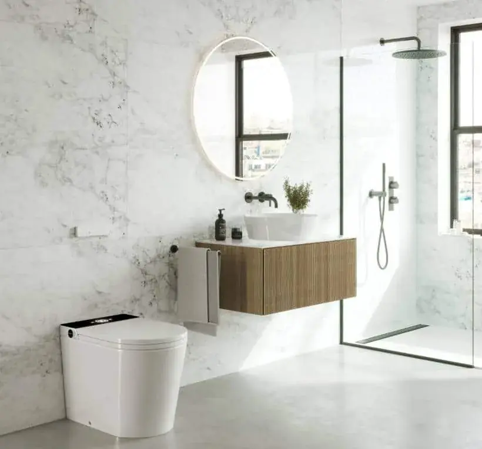
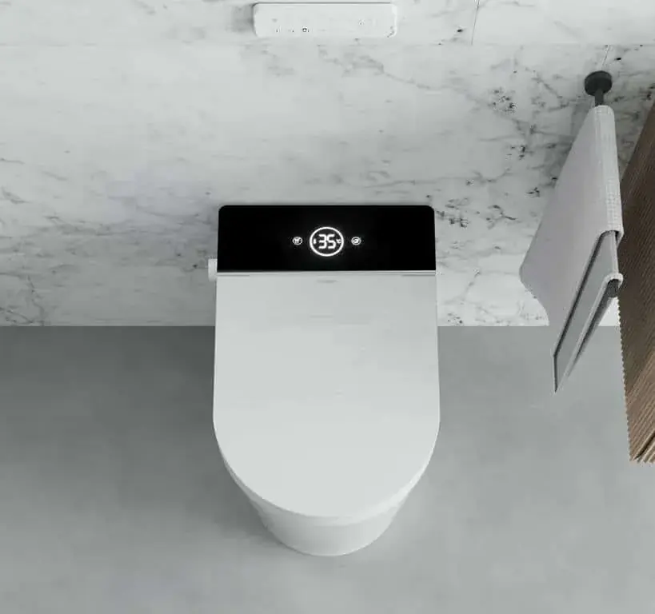
SanitariosInodoros inteligentes – MizuBath
Los inodoros inteligentes de MizuBath integran funciones de lavado con agua, secado y control de temperatura para una higiene precisa y sin contacto.
Su uso reduce o elimina el papel higiénico, mejorando el confort diario y el ahorro en consumibles gracias a su tecnología.
Disponibles en versión suspendida o a suelo, con diseños compactos que optimizan el espacio en baños pequeños. Los modelos a suelo incorporan cisterna oculta y sistema de tanque, evitando obras y facilitando una instalación rápida con solo un punto de luz.
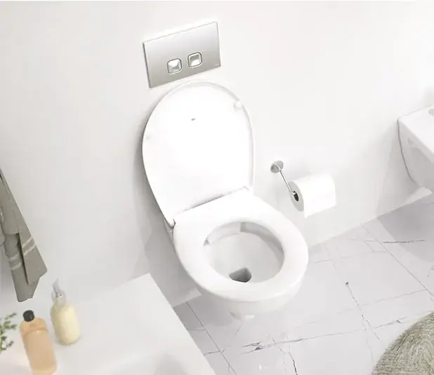
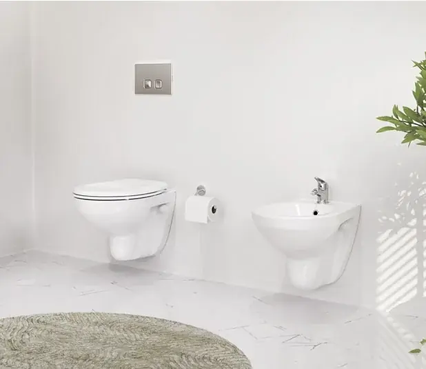
SanitariosInodoro suspendido clásico Lagoon – Oli
La marca referente en soluciones para baño presenta su nuevo modelo de inodoro suspendido Lagoon. Una pieza clásica, con diseño atemporal y líneas redondeadas que suavizan su integración con el resto de la decoración en la estancia.
Hecho a partir de porcelana vítrea, la elección de este material lo convierte en un modelo de lo más resistente y duradero, convirtiéndolo en una opción sostenible. Además, su condición en forma suspendida facilita el mantenimiento diario aportando mayor higiene y limpieza al inodoro.
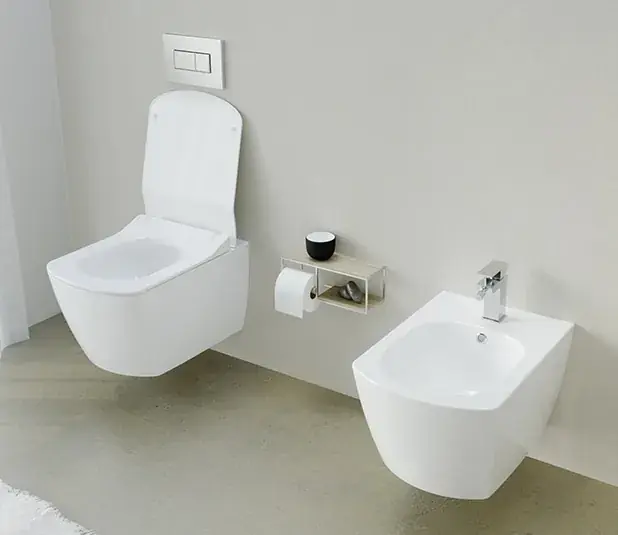
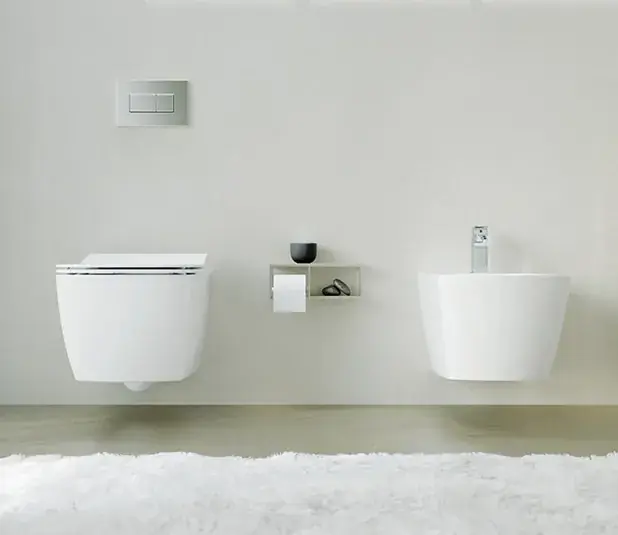
SanitariosInodoro suspendido moderno River - Oli
River se la nueva solución de Oli en inodoros para baños modernos y actuales. Sus acabados rectilíneos y el diseño compacto en forma cuadrada, aportan robustez y resistencia al modelo.
El diseño suspendido que lo caracteriza y el tipo de fijación que requiere, garantiza la facilidad en la limpieza y una durabilidad óptima.
La colección incluye un modelo de bidé bajo la misma línea que, junto a las cisternas interiores que ofrece OLI, dan una solución íntegra a cualquier baño.
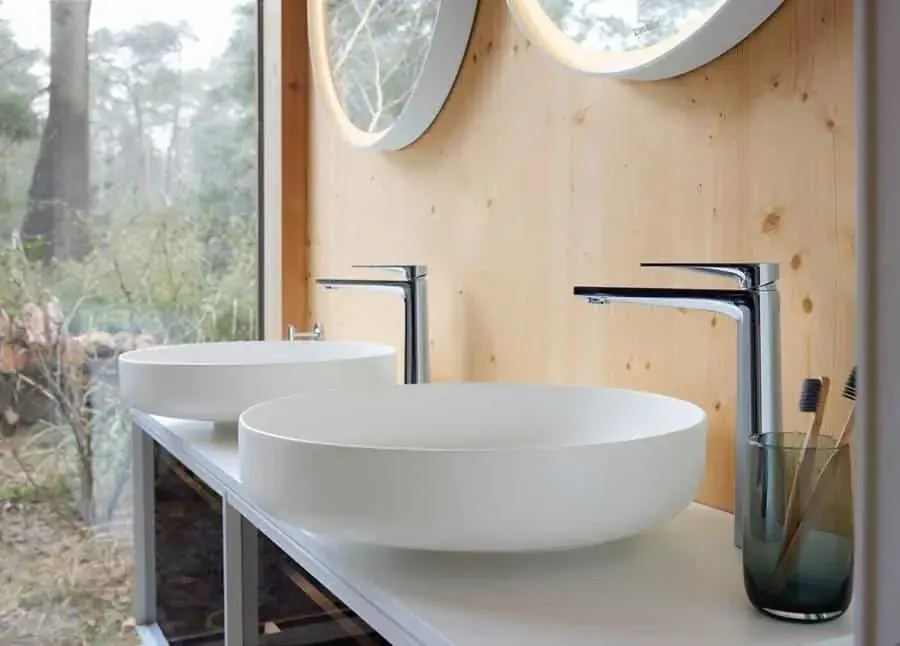
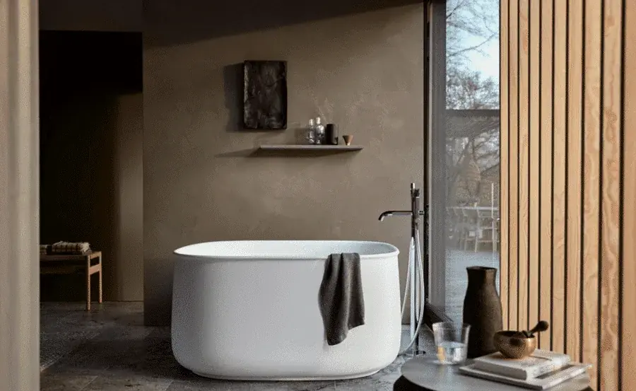
SanitariosMaterial para sanitarios DuroCast - Duravit
Duravit invierte en tecnología y presenta DuroCast, una colección para sanitarios desarrollada a partir de materiales de origen mineral.
Gracias a la selección de materias primas, la nueva línea garantiza una gran solidez y capacidad para prevenir el deslizamiento convirtiéndose en la alternativa más segura. Las propiedades que le aporta el material hacen que se reconozca como una de las marcas más sólidas y de calidad del mercado.
La gama está disponible en 4 variantes que difieren en los acabados y detalles de diseño: DuroCast Plus, DuroCast UltraResist, DuroCast Smooth y DuroCast Nature.
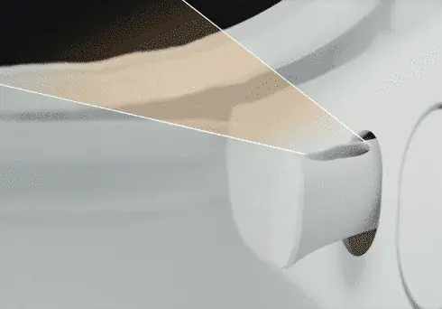
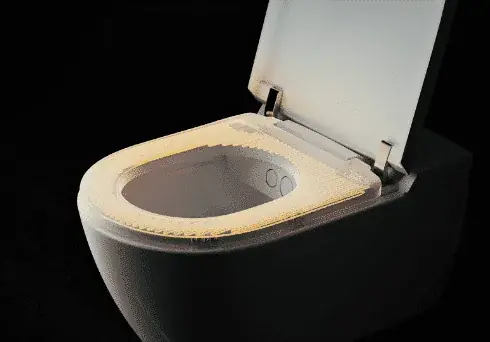
SanitariosInodoro con ducha ViClean-I 200 – Villeroy&Boch
Sumérgete en el máximo confort y frescura con el nuevo ViClean-I 200 de Villeroy & Boch.
Este inodoro con ducha, además de aportar elegancia y sofisticación a tu baño, te acerca la última tecnología con características innovadoras como HarmonicWave, secado ComfortDry y detección de usuario por sensor.
Con un diseño inteligente y materiales top-notch, garantiza una experiencia de limpieza y comodidad única. Descubre la revolución en el bienestar personal con el ViClean-I 200 de Villeroy & Boch! Di adiós al papel y dale la bienvenida al confort moderno.
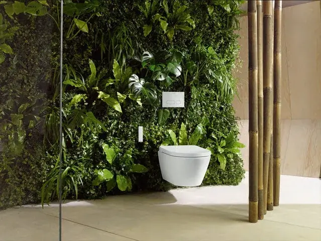
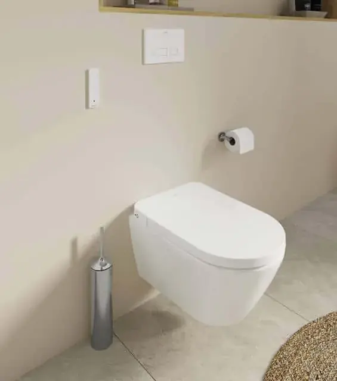
SanitariosInodoro de diseño SensoWash® D-Neo WC – Duravit
Duravit sorprende con SensoWash® D-Neo, el nuevo inodoro de lavado de la exitosa colección ahora en su versión más económica.
Lejos de perder cualidades, este modelo conserva la excelente calidad que caracteriza a la marca, pero a un precio más asequible.
Una pieza de diseño moderno que ofrece la máxima higiene incorporando las últimas novedades en tecnología HygieneGlaze y Rimless®
Su aspecto lineal combina con cualquier baño y con el resto de las series de diseño Duravit. Piezas de gran valor, prácticas, que aseguran un gran confort gracias a las facilidades que permiten sus funciones, como la calefacción integrada en su asiento.
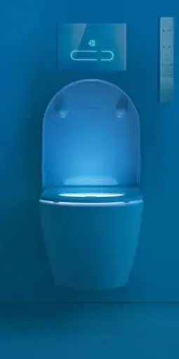
SanitariosIluminación para sanitarios de baño – Duravit
Duravit potencia la seguridad de tu espacio de baño, gracias a la iluminación LED, que aumenta la visibilidad, sobre todo, por la noche, cuando nos levantamos medio dormidos y no estamos tan atentos como de día.
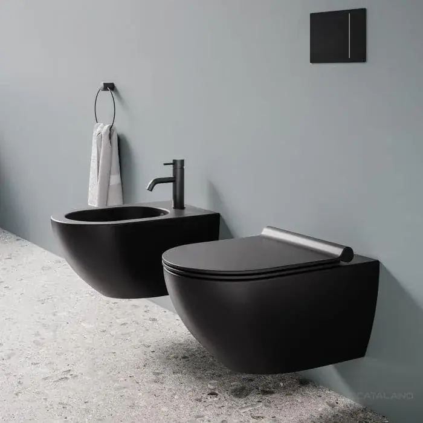
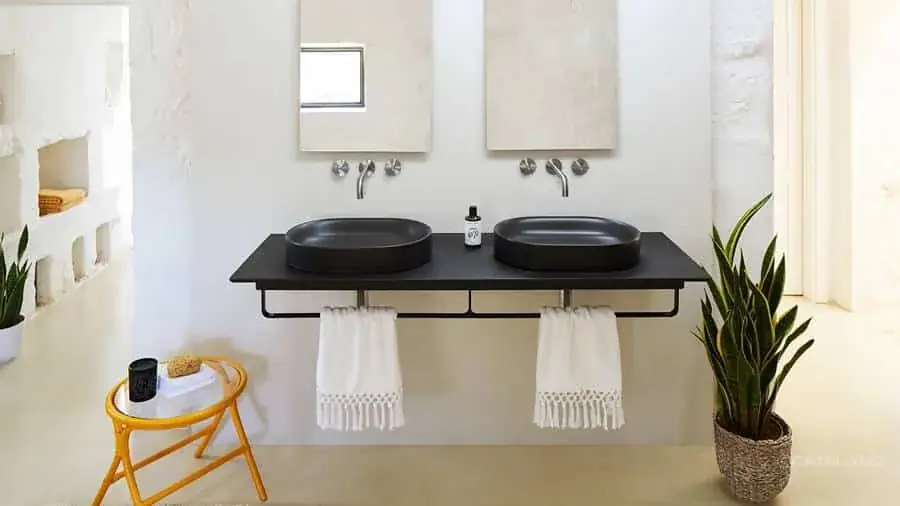
SanitariosSanitarios para baños Black is back - Catalano
¿Quién dijo que los sanitarios solo podían ser blancos? Con Black is back, Sanitarios Catalano desafía las convenciones con esta colección que, además de un diseño exclusivo, se caracteriza por su funcionalidad a la hora de disfrutarlo y de limpiarlo.
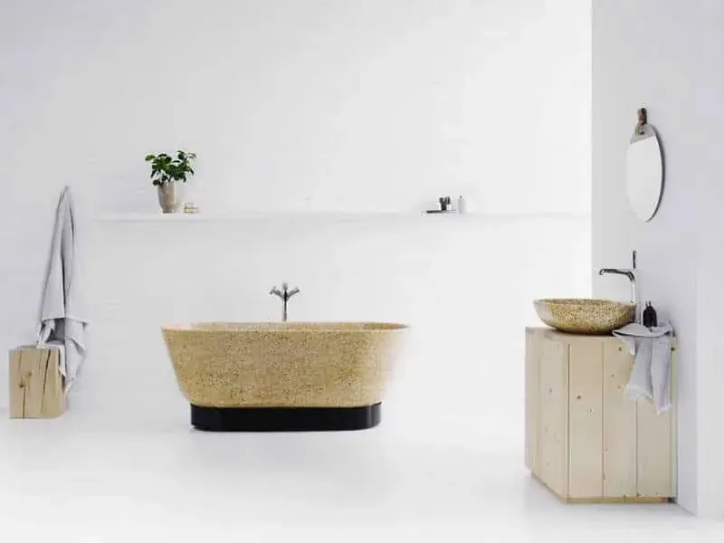
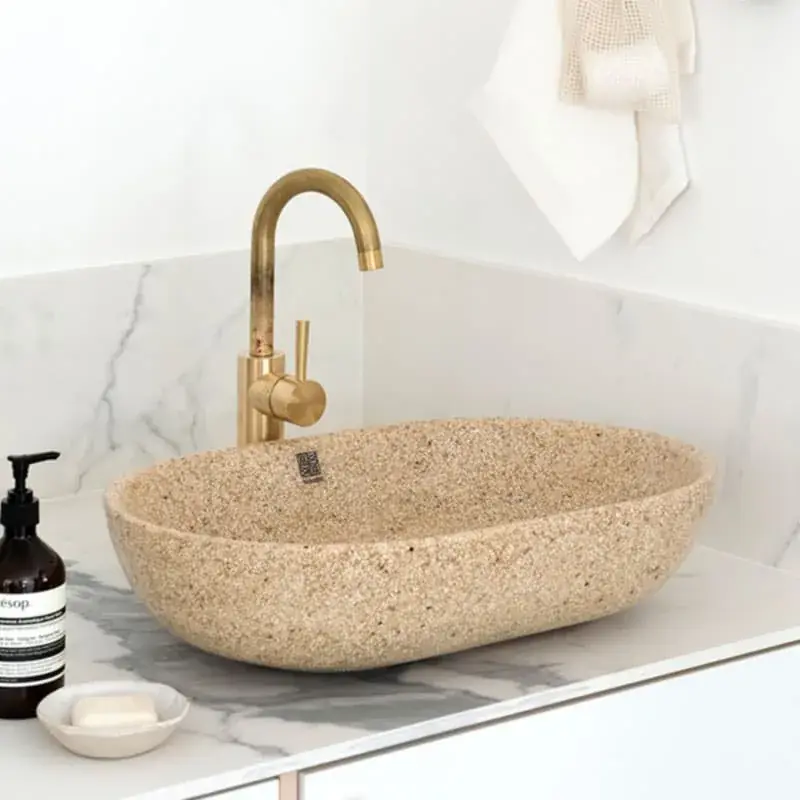
SanitariosSanitarios de madera para cuartos de baño - Woodio
Woodio es un innovador compuesto de madera maciza fabricado a partir de virutas, también de madera, totalmente resistente e impermeable. Sus colecciones son un ejemplo de modernidad y de diseño escandinavo, en total sintonía con las nuevas tendencias.
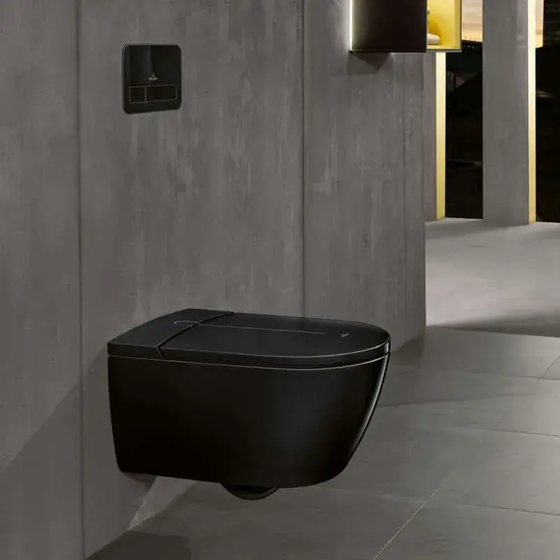
SanitariosSanitarios color negro para baños ViClean-I 100 Black Edition – Villeroy&boch
Villeroy & Boch presenta un inodoro de excelente diseño, que permite, sin precedentes, incorporar todo el sistema en porcelana. Por este motivo, a simple vista no detectamos que es un inodoro con lavabo.
De líneas discretas y confort insuperable, ViClean-I 100 es totalmente intuitivo y funcional. Un elemento que lleva a otro nivel tu espacio de baño.
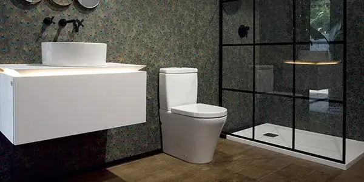
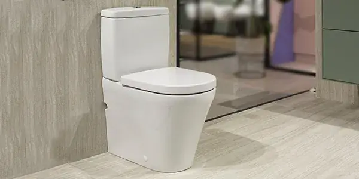
SanitariosInodoro de baño O.Tulip – Villeroy&boch
O.Tulip de VILLEROY & BOCH es un inodoro compacto de pie (60 cm) con fondo profundo, que incluye cisterna de salida inferior y asiento amortiguado softclosing. Estética y funcionalidad al servicio de cualquier espacio de baño, de cualquier dimensión. Además, este elegante inodoro, O.Tulip, incluye tecnología de última generación DirectFlush.
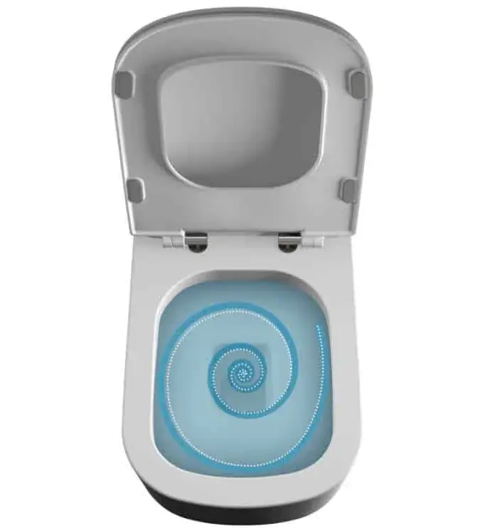
SanitariosInodoro suspendido para baño Rimless 2.0 – Ceramica Cielo
Cuando una firma puntera se propone crear un producto innovador, además de experiencia son necesarios años de estudio.
En Cerámica Cielo lo saben. Tras cuatro años de investigación lanzan un nuevo inodoro con tecnología patentada, de nombre Rimless.
Un accesorio de baño que garantiza higiene, eliminación de goteo, máxima funcionalidad y ahorro de consumos de agua.
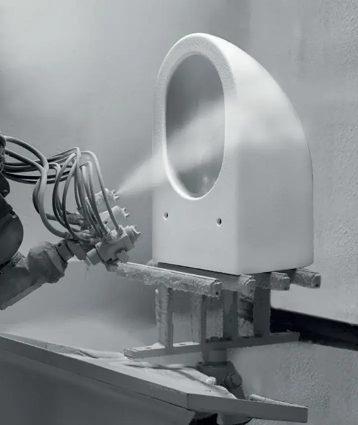
SanitariosEsmalte anti bacterias para inodoros – Catalano
CATAGLAZE + Silver & Titaniumun, es la nueva e innovadora apuesta de Cerámica Catalano.
Un esmalte anti-bacterias para todos sus productos de baño, gracias al que se reduce la cal depositada, se facilita la limpieza de sanitarios, se combaten con eficacia gérmenes y bacterias, mejorando a la vez la resistencia de la cerámica.
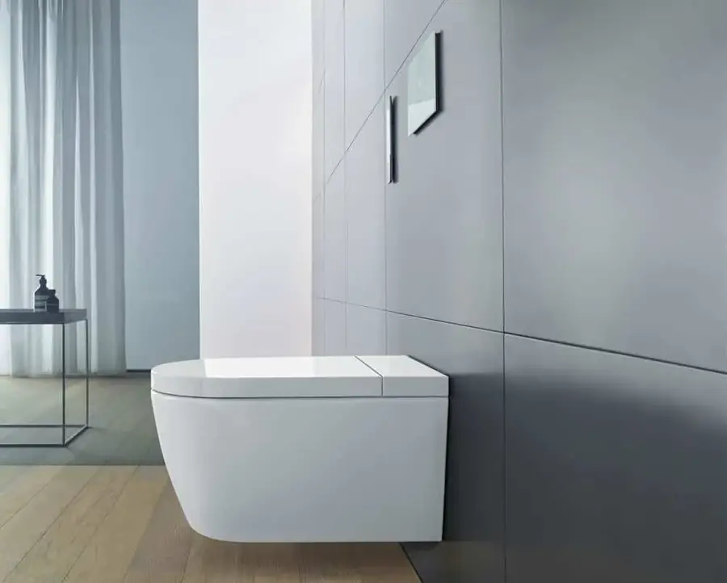
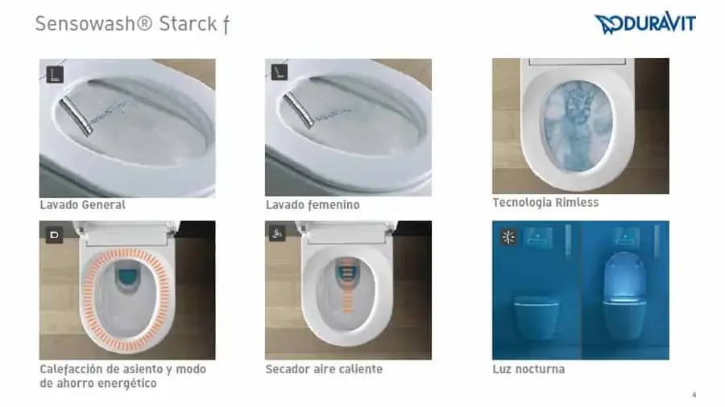
SanitariosAsientos de lavabo Starck F – Duravit
Imagínate un lavabo con sensores que le ayudaran a saber que alguien se aproxima, para que se levante la tapa, y que alguien se ha sentado…
A lo anterior añádele calefacción tanto en la superficie como en el chorro y secado.
Y finalmente intenta imaginar un diseño icónico cuya función es la de aportar máximo confort.
Pues bien, todo lo anterior lo acaba de presentar Duravit en sus nuevos asientos de lavabo Starck, un lanzamiento que tiene visos de dar mucho que hablar.
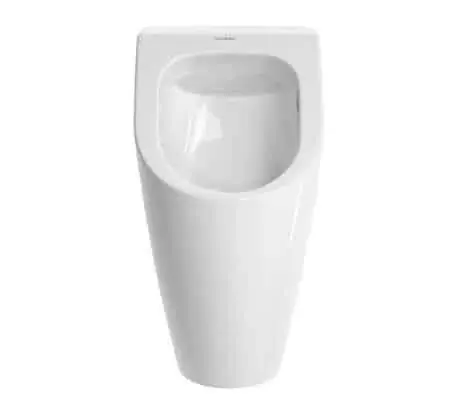
SanitariosUrinario ME para aseos – Duravit
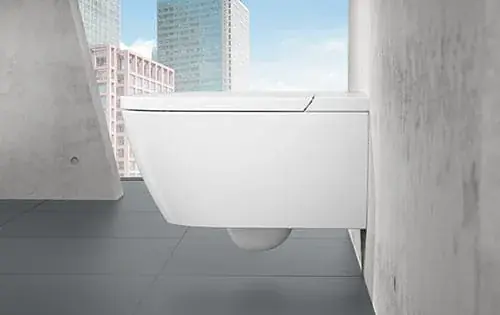
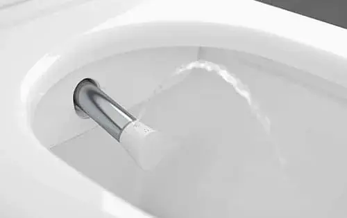
SanitariosInodoro con bidé Viclean-I 100 – Villeroy&Boch
Son cada vez más el número de personas que cuando piensan en renovar o instalar por primera vez un inodoro para su casa (aunque esto también lo vemos en hoteles Premium), buscan modelos que además de proporcionar el máximo confort en cuanto a las necesidades obvias y fundamentales de un wc, también incorporen prestaciones adicionales que mejoren la higiene diaria, y lo hagan con la máxima discreción en cuando a diseño.
Ante estas premisas y alguna más, Villeroy & Boch acaba de lanzar un nuevo inodoro de la serie VICLEAN, que incorpora un lavabo integrándolo a la perfección en la misma cerámica del wc, mediante un sistema y diseño gracias al que el lavabo prácticamente no se ve, cuando dejas de usarlo.
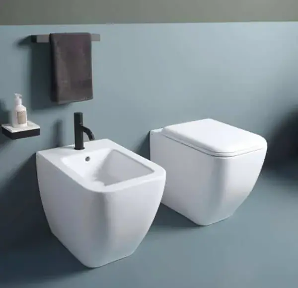
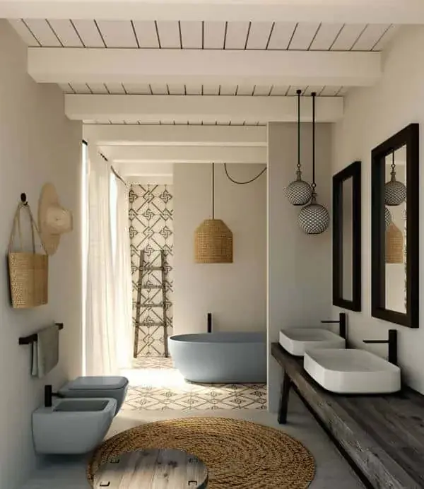
SanitariosInodoro, bidet y lavabo Shui Comfort - Cielo
Diseñada por Paolo d’ Arragio, la colección para baños Shui Confort de la italiana Cielo, una óptima combinación entre confort espacial y versatilidad gracias a la suavidad de formas y materiales utilizados, se acaba de completar con la incorporación de nuevos elementos, entre los que destacamos el inodoro y bidet empotrados, junto al ultra fino y sensorial lavabo.
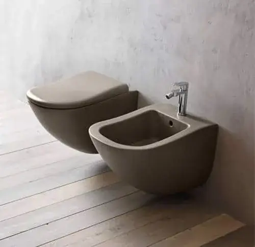
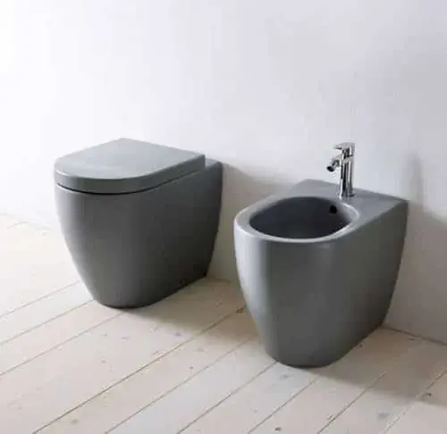
SanitariosNuevos sanitarios y bidets suspendidos - Cerámicas Cielo
Cercámicas Cielo, empresa líder a nivel internacional en la producción de sanitarios de diseño y muebles para lavabos y baño, propone dos nuevas opciones en su elegante y singular colección de sanitarios suspendidos Le Terre di Cielo. Ahora puedes solicitarlos en colores AVENA y CEMENTO.
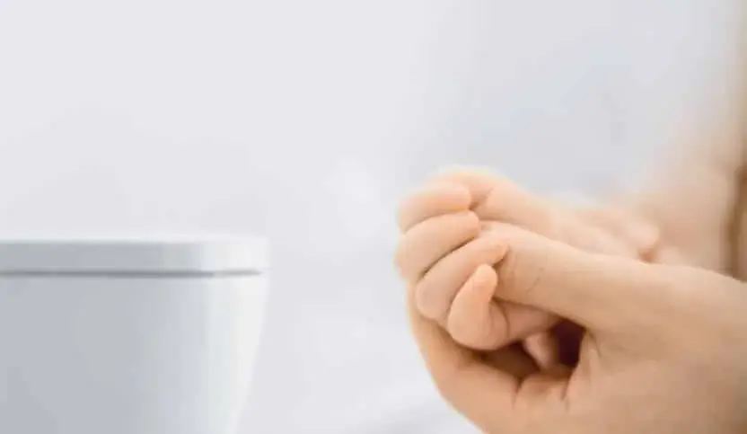
SanitariosLimpieza e higiene de inodoros y urinarios - Duravit
Conociendos con la importacia de garantizar la máxima limpieza e higiene en inodoros y urinarios, y de hacerlo de forma sencilla y eficiente, Duravit ha creado tres innovadoras técnicas:
Rimles: inodoros sin canal de lavado, capaces de conducir el agua de tal forma que la higiene está 100% garantizada, y todo ello con poca utilización de agua. Además, su borde abierto, también ayuda a la limpieza de la taza. Esta tecnología la encuentras en los inodores de las series DuraStyle, Darling New, Starck 3, Happy D.2, P3 Comforts y ME by Starck
Hygiene Glaze: un vitrificado para cerámica con efecto antibacterias, que las elimina eficazmente en un 99,9% de los casos, una eficacia que hasta la fecha nunca nadie había conseguido alcanzar. Esta tecnología la tienes en las series de inodoros Duravit ME by Starck y P3 Comforts.
WonderGliss: una superficie de calidad máxima, híper resistente a la suciedad, que se aplica directamente en la cerámica, y con la que puedes revestir cualquiera de los inodoros de la marca Duravit
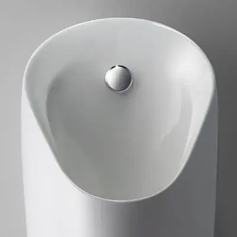
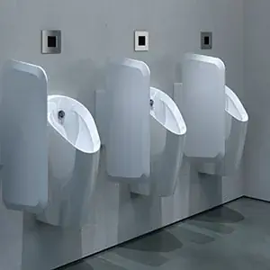
SanitariosUrinarios de baños Preda y Selva - Geberit
Geberit, de la mano del diseñador Christoph Behling, ha presentado unos nuevos urinarios de porcelana sanitaria Preda y Selva (premiados con el iF Design Award de 2016), para cuyo diseño se han tenido en cuenta primordialmente dos conceptos: la elegancia y la eficiencia.
Como resultado, estos urinarios (muy estrictos con la eficiencia energética), cuya forma rimless reduce la necesidad de tiempo de limpieza, previene la aparición de olores y facilita una perfecta descarga con tan solo 0.5 litros de agua.
Los tienes disponibles en tres versiones, así como en varios tipos de alimentación eléctrica. Así mismo y en caso de solicitarlo, también les puedes incorporar un sistema de control que se conecta a la red eléctrica.
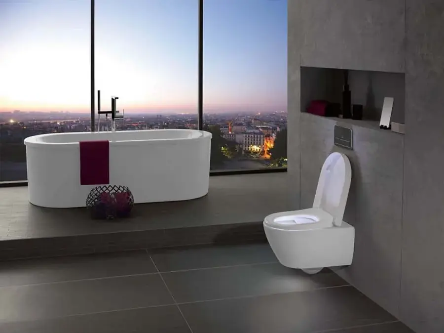
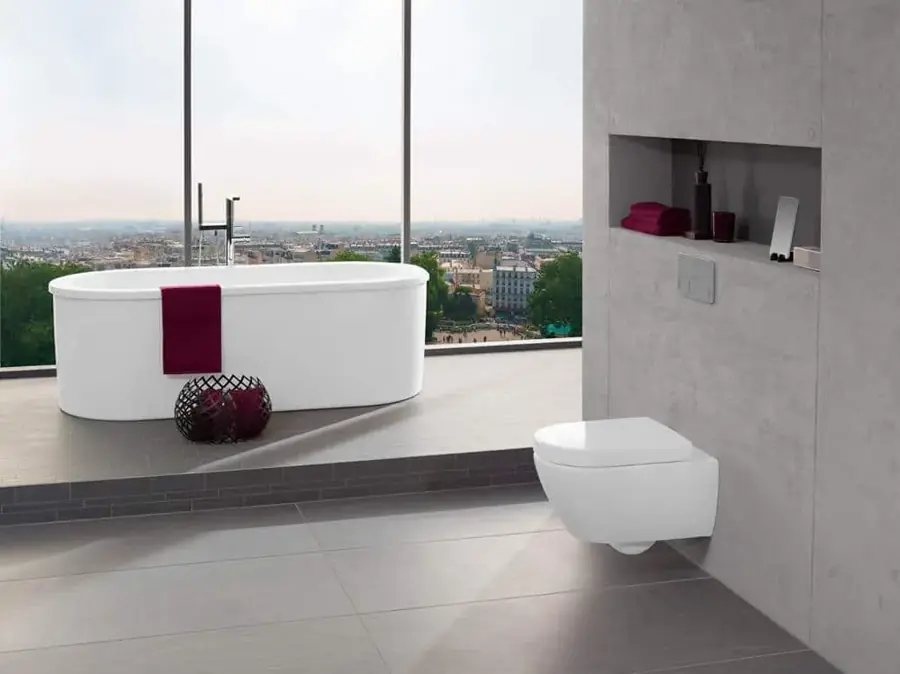
SanitariosAsiento de inodoro para el cuarto de baño ViSeat - Villeroy&Boch
Cuándo piensas en un asiento tremendamente cómodo y confortable para un inodoro, ¿qué es lo que te imaginas?, ¿qué pasa por tu mente?
¿Te imaginas que existiera uno que además de las funciones básicas de este accesorio tan importante en el baño, también incorporara luz de noche blanca, un sensor de luz natural, calefacción con la posibilidad de regular la temperatura según tus preferencias, un sistema de apertura automática controlado por sensores, un sistema de cierre suave, y la opción de extracción sencilla y completa para su limpieza?
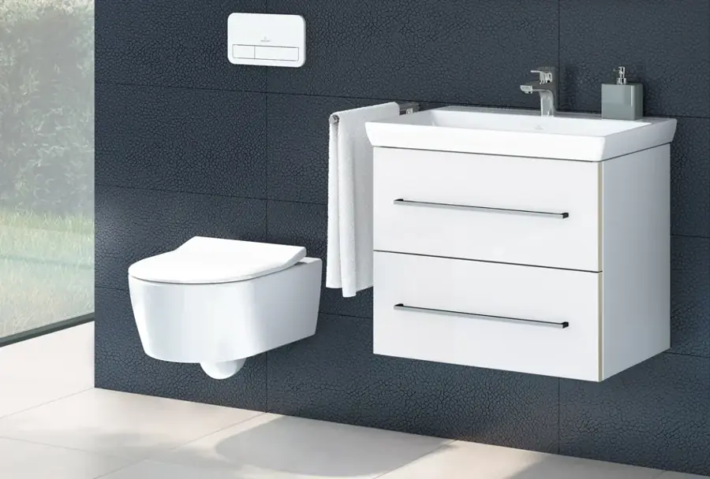
SanitariosInodoro completo Avento DirectFlush - Villeroy&Boch
Este novedoso Combipack de la colección Avento de Villeroy & Boch, incluye un inodoro suspendido de fondo profundo y volumen de aclarado de entre 3 y 6 litros, con salida horizontal, y con la innovadora tecnología Directflush (sin reborde) para una mayor higiene. También incluye el asiento con bisagras QuickRelease (fácil de desmontar y de limpiar) y el sistema SoftClosing (asiento amortiguado).
- Sanitarios
Control lavado de urinarios ProDetect 2 - Villeroy & Boch
El control del lavado de los urinarios es un aspecto importante sobre todo en aquellos de uso público en los que la higiene constante es fundamental.
Con esta idea en mente y mejorando el diseño anterior, nace esta nueva innovación de Villeroy & Boch, la cual mejora el control de lavado del anterior modelo, gracias a su sistema de protección del desbordamiento, su comodidad de uso, y como no, su alta efectividad.
Junto a las características funcionales anteriores, destacamos su sistema de control, que además de manual te facilita una app con una interfaz Bluetooth opcional ProDetect 2 que puede ser descargada gratuitamente en la App Store (iOS) o en Google Play Store (Android).
¡Una maravilla tecnológicamente hablando!
- Sanitarios
Inodoros-bidés para baños - Villeroy & Boch?
Una excelente propuesta de máximo confort según las costumbres japonesas.
El modelo ViClean-L, inspirado en las hojas de los árboles, combina diseño y la más innovadora tecnología. Sus creadores, Debiasi y Sandri, crearon un inodoro-bidé óptimo para cualquier cuarto de baño.
Sus múltiples funciones incluyen: chorro oscilante de agua, chorro de masaje, ajuste de temperatura y presión, secador, asiento calefactable, iluminación LED, control remoto para activarlo a distancia, así como para abrir y cerrar su tapa sin ruido y esfuerzo.
- Sanitarios
Inodoros Rimfree® - Pozzi-Ginori
Levanta el asiento y notaras inmediatamente la diferencia …
Los inodoros de Pozzi-Ginori tecnología Rimfree® son ultra-higiénicos y hacen la limpieza más fácil y más rápida. Debido a la ausencia del borde, no hay un punto donde la suciedad y los gérmenes pueden ocultarse. El sistema de lavado elimina cualquier residuo con una limpieza eficaz y regular, es más fácil que nunca, ahorrando tiempo y productos de limpieza.
El agua desciende en el inodoro a través de una ranura situada en la parte trasera de la retrete. Los agujeros en los extremos dan la función de hendidura en forma de chorros, mejorando el flujo de agua alrededor del reborde y lavándolo de modo silencioso y eficaz. El diseño inteligente asegura que el agua entra en el reborde con el ángulo preciso, manteniendo al mismo tiempo la fuerza y la velocidad.
La forma y el tamaño de la salida de agua ha sido diseñada de tal manera que la presión del agua es capaz de eliminar el contenido de forma rápida y fácil.